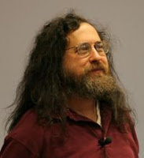

<ion-view view-title="Playlist">
  <ion-content>
   
    <h1>Jose Aguirre Arias</h1>
    	<!-- aqui aplico directivas -->
      	
      	<!--<input type="checkbox" ng-model="dato1">
      	<input type="checkbox" ng-model="dato2">
      	<h2 ng-show="dato1">dato 1</h2>
      	<h2 ng-hide="dato2">dato 2</h2>-->
      	<div class="list card">
      		<div class="item item-avatar">
      			
      			<h2>Richard Stallman</h2>
      			<p>Manhattan, Nueva York, 16 de marzo de 1953</p>
      		</div>
      		<div class="item item-body">
      			<!---->
      			<p>En 1971, siendo estudiante de 1º año de Física en la Universidad de Harvard, Stallman se convirtió en un hacker del laboratorio de inteligencia artificial del MIT. En los años 1980's, la cultura hacker que constituía la vida de Stallman empezó a disolverse bajo la presión de la comercialización de la industria del Software, otros hackers del laboratorio de IA, fundaron la compañía Symbolics, la cual intentaba reemplazar el software libre del Laboratorio con su propio software privativo. En 1983, anunció en varios grupos de noticias de Usenet, el inicio del proyecto GNU, que perseguía crear un sistema operativo completamente libre. En 1985, publicó el Manifiseto GNU, en el cual declaraba sus intenciones y motivaciones para crear una alternativa libre al sistema operativo Unix, al que denominó GNU. Después fundó la organización sin ánimo de lucro Free Software Foundation, e inventó el concepto de copyleft, que fue utilizado en la Licencia Pública General GNU en 1989.</p>
      			<a class="subdued">1 like</a>
      			<a class="subdued">1 coments</a>
      		</div>
      	</div> 
  </ion-content>
</ion-view>
